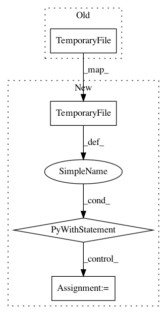

72089d5f9fa21cabb5bd8fb202b817b3973801a2,nilearn/plotting/tests/test_img_plotting.py,,test_plot_functions,#,94
Before Change
ax = pl.subplot(111, rasterized=True)
out = plot_stat_map(
img, symmetric_cbar=True,
output_file=tempfile.TemporaryFile(suffix=".png"),
axes=ax, vmax=np.nan)
pl.close()
After Change
// test for bad input arguments (cf. /릖)
ax = pl.subplot(111, rasterized=True)
with tempfile.TemporaryFile(suffix=".png") as fp:
plot_stat_map(
img, symmetric_cbar=True,
output_file=fp.name,
axes=ax, vmax=np.nan)
pl.close()
def test_plot_glass_brain():
In pattern: SUPERPATTERN
Frequency: 4
Non-data size: 4
Instances
Project Name: nilearn/nilearn
Commit Name: 72089d5f9fa21cabb5bd8fb202b817b3973801a2
Time: 2015-03-27
Author: danilobzdok@gmail.com
File Name: nilearn/plotting/tests/test_img_plotting.py
Class Name:
Method Name: test_plot_functions
Project Name: nilearn/nilearn
Commit Name: f552b3a20131de2a4c6ee5fe34168d59ca7cdbb5
Time: 2015-03-05
Author: bcipolli@ucsd.edu
File Name: nilearn/plotting/tests/test_img_plotting.py
Class Name:
Method Name: test_demo_plot_roi
Project Name: nilearn/nilearn
Commit Name: f552b3a20131de2a4c6ee5fe34168d59ca7cdbb5
Time: 2015-03-05
Author: bcipolli@ucsd.edu
File Name: nilearn/plotting/tests/test_displays.py
Class Name:
Method Name: test_demo_ortho_projector
Project Name: nilearn/nilearn
Commit Name: f552b3a20131de2a4c6ee5fe34168d59ca7cdbb5
Time: 2015-03-05
Author: bcipolli@ucsd.edu
File Name: nilearn/plotting/tests/test_displays.py
Class Name:
Method Name: test_stacked_slicer